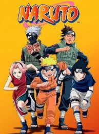

Naruto
Naruto é um anime escrito e ilustrado pelo criador Masashi Kishimoto. O
anime conta sobre uma criança que nasceu com o espiríto das raposa de
nove caudas. Sendo ignorado e maltrado por ter uma raposa demoníaca
selada dentro dele, seu sonho é ser tornar um hokage e batalhar para ser
reconhecido.

Kimetsu no Yaiba (Demon Slayer)
Kimetsu no Yaiba, também conhecido como Demon Slayer, é um anime escrito
e ilustrado pelo criador Koyoharu Gotōge. O anime gira em torno do
personagem principal Tanjiro Kamado, após ter a sua família assasinada
por um demônio, sendo a única sobrevivente sua irmã mais nova que foi
transformada em um demônio. Agora, cabe ao Tanjiro Kamado curar a sua
irmã e derrotar os demônios.

Overlord
Overlord é um anime escrito e ilustrado pelo criador Kugane Maruyama.
Quando um MMORPG bastante popular anuncia que será desligado
permanentemente, um jogador veterano se recusa a deslogar: Momonga. À
medida que NPCs começam a desenvolver personalidades e mentes próprias,
ele decide usar suas habilidades para se tornar o novo chefão do jogo.